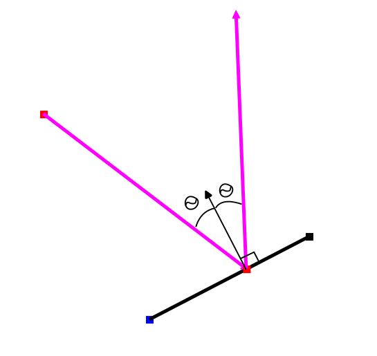
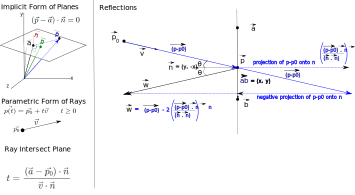

Week 3: Ray Reflections
Chris Tralie
Getting Started
Click here to download the repository of skeleton code for this exercise. You will be editing the file rayReflect.js, and you will run rayReflect.html to view the results
Overview
Your goal in this exercise will be to construct a ray that's the perfect reflection (angle in = angle out) of an incoming ray into a line segment:
Solution
Below is a video that covers this
And below are some notes to go along with the video
Finally, below is code with a working implementation using the glMatrix library:
And below is a working implementation for you to play with: